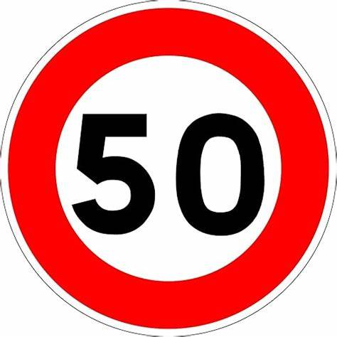

Règles générales
.png) Autoroute
Autoroute
Autoroute
Sécurité routière sur l'autoroute:
1 - Respecter les distances de
sécurité:
La conduite sur autoroute impliquant
la présence de nombreux usagers sur
des voies de circulation proches, les
conducteurs doivent impérativement
respecter les distances de sécurité
liées aux autoroutes, et qui sont à
calculer à partir des lignes de rive,
qui se trouvent à l'extrémité de la
voie la plus à droite.
2 - Faire des pauses toutes les deux
heures
Les usagers circulant le long du
réseau autoroutier doivent
impérativement penser à réaliser des
pauses toutes les deux heures sur des
aires de repos.
3 - Vérifier les voyants de son
tableau de bord
Les usagers doivent vérifier
régulièrement l'état des voyants de
leur tableau de bord ainsi que le
volume de carburant restant dans leur
réservoir afin d'éviter au maximum
tout risque de panne sur l'autoroute.
4 - Utiliser la bande d'arrêt
d'urgence et les refuges des a
utoroutes
Les conducteurs circulant le long du
réseau autoroutier français ne
doivent utiliser la bande d'arrêt
d'urgence qu'en cas d'extrême
urgence. Il est également fortement
conseillé aux automobilistes devant
s'arrêter de stopper leur véhicule
sur un refuge d'autoroute s'ils en
ont la possibilité.
5 - Contacter les secours grâce aux
dispositifs prévus à cet effet
Si de plus en plus de véhicules sont
équipés d'un dispositif eCall, ce
n'est pas le cas de l'ensemble des
automobiles pouvant circuler le long
du réseau autoroutier. Si des usagers
de la route sont les victimes d'une
panne ou sont les témoins d'un
accident de la circulation, ils ne
doivent surtout pas hésiter à
utiliser les bornes d'appel SOS
qu'ils pourraient rencontrer.
Agglomérations

Sécurité routière sur les agglomérations:
1. Limites de vitesse :
Respectez les limitations de vitesse indiquées. Dans les zones urbaines, la vitesse est généralement limitée à 50 km/h, mais cela peut varier. Assurez-vous de connaître les limites spécifiques à la région.
2. Priorité aux piétons :
Donnez toujours la priorité aux piétons aux passages cloutés et aux intersections. Arrêtez-vous complètement lorsque quelqu'un traverse la rue.
3.Feux de signalisation :
Respectez les feux de signalisation. Arrêtez-vous au feu rouge et ne traversez l'intersection que lorsque le feu est vert.
4. Circulation dans les ronds-points :
Suivez les règles spécifiques aux ronds-points. En général, les véhicules entrant dans le rond-point doivent céder le passage à ceux qui sont déjà à l'intérieur.
5. Utilisation du téléphone portable au volant :
Évitez l'utilisation du téléphone portable pendant la conduite. Si nécessaire, utilisez un kit mains-libres.